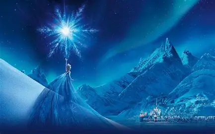

| 身份 | 阿伦黛尔女王（前公主）；第五灵（The Fifth Spirit） |
| 登场作品 | 《冰雪奇缘》《Frozen Fever》《Olaf's Frozen Adventure》《冰雪奇缘2》《Once Upon a Snowman》 |
| 配音（英） | Idina Menzel；童年 Eva Bella（对白）、Mattea Conforti / Livvy Stubenrauch（歌唱） |
| 中文配音 | 大陆：胡维娜／张安琪（唱）；台湾：林美秀；香港：罗敏庄 |
| 亲属 | 妹妹安娜；父母阿格纳尔与伊杜娜（已故） |
| 盟友 | 安娜、雪宝、克里斯托夫、斯文、巨魔帕比等 |
| 魔法 | 天生冰雪魔法；第二部揭示其为连接人与灵界的「第五灵」 |
角色速览
艾莎是阿伦黛尔长公主，生而拥有冰雪魔法。与大多数童话「反派有超能力」不同，她的力量既是祝福也是诅咒：童年误伤妹妹安娜后，父母将两姐妹隔离、并请巨魔抹去安娜关于魔法的记忆，艾莎从此活在「必须 conceal, don't feel（隐藏、别去感受）」的恐惧里 （来源：《Conceal Don't Feel》／《Frozen 1 青少小说》）。她把责任与完美主义扛在肩上，直到加冕日魔法失控、被迫直面真实的自己。
《冰雪奇缘2》将她推向「自我认知」的核心：她是阿塔霍兰（Ahtohallan）预言中的第五灵，注定连接人类与四大元素之灵。她一路循着神秘呼唤渡海寻根，最终以牺牲接纳身世、完成两界和解，并选择定居魔法森林、以第五灵的身份守护两个世界 （来源：《The Art of Frozen II》[p.010][p.120][p.139]）。
性格特质
- 克制、责任感极强：习惯把情绪与力量锁起来，宁可孤独也不愿连累他人；加冕前反复练习「得体」以不露破绽。
- 保护欲（尤其对安娜）：隔离妹妹、拒绝靠近，本质都是怕伤到她；第二部即使身陷冰封也想把安娜推离危险。
- 从恐惧到接纳的成长弧：由「Conceal, don't feel」的自我压抑，走向《Let It Go》的释放，再到《Show Yourself》的坦然与《Into the Unknown》的勇敢。
- 优雅而孤独的完美主义：追求掌控，却因过度自责而在 F2 一度「冻住自己」；最终学会把爱而非恐惧作为力量的支点。
外貌特征
- 白肤、银白金发、蓝眼；身形高挑端庄。恐惧或压抑时发色偏冷白，释放魔法后整体转为冰蓝调。
- 第一部加冕为宝蓝露肩 rosemaling 礼服，失控后换上《Let It Go》的冰晶蓝裙与曳地长辫；第二部前期为深蓝星点长裙，终幕为第五灵白金长裙与侧编发。
造型与时代演变
艾莎的造型随心理阶段变化：从「藏住自己」的宝蓝加冕裙，到《Let It Go》彻底释放的冰晶蓝裙，再到《冰雪奇缘2》寻根旅程的深蓝旅途装与第五灵白裙。以下整理已收集的造型图：
第一部 · 加冕与释放

加冕典礼上的宝蓝礼服

《Let It Go》· 冰晶蓝裙
第二部 · 寻根与第五灵

终幕 · 第五灵白裙
来源：《The Art of Disney Frozen》[p.049]；《The Art of Frozen II》[p.010][p.035][p.045][p.120][p.139]；Disney 官方宣发物料
主要剧情线
第一部：从隐藏到「真爱之举」。艾莎自幼冰雪魔法失控误伤安娜，父母隔离姐妹并抹去安娜记忆。加冕日她终因压力失控暴露魔法，逃往北山用力量筑起冰宫，唱出《Let It Go》宣告独立。安娜追来劝她回去，争执中艾莎误伤安娜心脏（冰咒）。最终汉斯欲杀艾莎时，安娜以身挡剑化为冰雕——艾莎的「真爱之举」融化冰封、让妹妹复苏。她学会不再恐惧自己的力量，加冕为阿伦黛尔女王 （来源：Disney 官方 / Frozen (2013)；《Frozen 1 青少小说》）。
第二部：第五灵与身世真相。艾莎听到神秘呼唤（母亲的歌声），与安娜同入魔法森林。她独自渡海抵达阿塔霍兰，得知真相：祖父鲁内尔德为防北境民族而建水坝、引发世代仇杀，父母为求得和平与两国友谊而牺牲。艾莎在《Show Yourself》中接纳身世，却因触碰「太过深入」的真相而冰封；被安娜摧毁水坝、解除迷雾后救回。结尾她成为连接两界的第五灵，定居魔法森林，把王位交给安娜 （来源：Disney 官方 / Frozen II (2019)；《Frozen 2 Deluxe Junior Novel》）。
人物关系
- 安娜：艾莎一生最深的牵绊与软肋。她隔离安娜是出于保护，最终也因安娜的「真爱之举」而解冻；第二部她甘愿以冰封自己换安娜平安 （来源：Disney 官方 / Frozen (2013)；Frozen II (2019)）。
- 雪宝：艾莎童年魔法的造物，也是她纯真一面的外化；雪宝的「some people are worth melting for」正是对艾莎的注解 （来源：Disney 官方 / Frozen (2013)）。
- 父母（阿格纳尔与伊杜娜）：为保护姐妹与两国和平付出生命；艾莎第二部的旅程本质是与这段被隐藏的家族史和解 （来源：Disney 官方 / Frozen II (2019)）。
- 克里斯托夫与斯文：安娜的伴侣与伙伴，也是艾莎信赖的家人。
名场面与经典台词
- 「Let it go, let it go…」——《Let It Go》释放自我的宣言 （来源：Disney 官方 / Frozen (2013)，奥斯卡最佳原创歌曲）
- 「Conceal it, don't feel it, don't let it show.」—— 她自幼被反复叮嘱的生存法则 （来源：《Conceal Don't Feel》）
- 「Show yourself.」——《Show Yourself》中与母亲歌声、与真实身世相认 （来源：Disney 官方 / Frozen II (2019)）
- 「Some things never change.」—— 开篇对姐妹情的温柔注脚 （来源：Disney 官方 / Frozen II (2019)）
琐事与幕后
以下冷知识与幕后设定整理自 Fandom Frozen Wiki（中文配音见信息卡，来源：萌娘百科）：
- 生日：冬至（winter solstice），与妹妹安娜的夏至生日相隔半年，被粉丝并称为「至日姐妹」。
- 早期设定：艾莎在初版剧本中曾是反派（基于安徒生《雪之女王》的冰雪女王），后经 Jennifer Lee 等重构为「恐惧而非邪恶」的主角姐姐。
- 《Let It Go》：由 Kristen Anderson-Lopez 与 Robert Lopez 创作，Idina Menzel 的试唱版本直接被采用；该曲获第 86 届奥斯卡最佳原创歌曲。
- 第五灵：在《冰雪奇缘2》设定中，艾莎是「人类与精灵」的桥梁，与风、火、水、土四灵并列，合称第五灵。
- 魔法来源：官方设定艾莎的魔力为天生（非诅咒、非被祝福），是家族血脉中自然出现的禀赋。